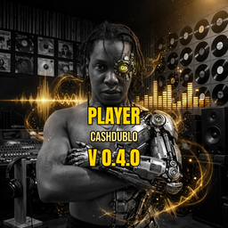

← All apps

Player
SOURCE: ANDROID 0.4.0 · BETAA music player for your own songs, with star ratings, moods, smart playlists and an AI Music DJ.
What it does
- Plays your own music files, and keeps playing in the background
- Browse by folders, songs, albums and playlists
- Star ratings saved right into your MP3 files, so they travel with the song
- Moods for your songs, and an AI Music DJ that builds a mix from them
- Fix song tags on the phone, with a backup saved before any change
- Six themes in the Theme Manager, including its own Vinyl Gold, plus King and Queen
- Speaks 14 languages, picked in Settings
- Song Theme: the screen dresses itself in the playing song's own colors once the song has played for a moment
- Smart playlists that build themselves: Most Played, Recently Played and Recently Added, from your own play record
- Party Mode: pick a mood for the room and it builds the queue - with a Children's mode that holds back marked songs
- Top 100: your own library ranked by your plays and star ratings, with a boost for songs on the current Apple Music Top 100
- Works hand in hand with Apple2Player to receive your music - and you dial how long the sharing window stays open, from 1 minute to 12 hours
- Offline, your library and playback keep working and Apple2Player sync on your own Wi-Fi is never blocked; the chart uses its last saved copy with its date, and tag lookups wait for the internet
Why have it
your music, your ratings, your moods - a player built for a big home library, not for selling you a subscription.
Version 0.4.0 · Android